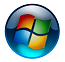
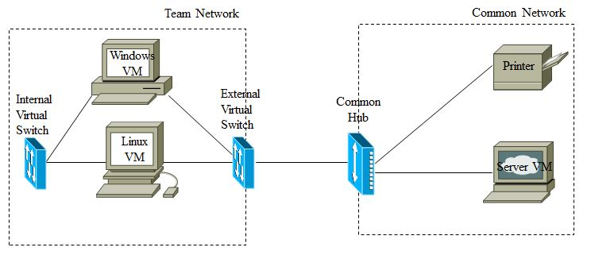

Pendant ce cours, vous travaillerez dans un environnement virtuel à distance. Les instructions ci-dessous vous guideront à travers la configuration requise au début de chaque exercice en laboratoire. Prenez le temps de comprendre chacun d’eux car cela améliorera votre efficacité pendant les nombreuses heures que vous passerez au laboratoire.
Ce laboratoire vise à:
Si vous êtes dans un environnement apocalyptique, post-apocalyptique ou pandémique… bienvenue! Veuillez suivre ces instructions pour avoir un accés à distance au laboratoire:
Start sous Windows System, tandis que Windows 7 l'a sous Accessories.Start, puis commencer à taper PowerShell.Open Terminal Here.ssh vmmuser@ugrad.cns.ece-rmc.ca pour vous connecter.
http://ugrad.cns.ece-rmc.ca:10080. Sélectionnez le lien Web GEF330.exe pour Windows ou des fichiers dmg/bundle pour Linux. Les utilisateurs Mac doivent installer VMRC à partir de l'Apple Store. Téléchargez et installez VMRC.
Connection Proxy Settings dans VMRC. Vous pouvez y accéder depuis votre navigateur en accédant à vmrc://settings. Définissez l'adresse proxy à ugrad.cns.ece-rmc.ca et le port proxy sur 3128. Cliquez sur OK pour fermer les deux fenêtres et fermer VMRC.gef330-UserX, où X est votre numéro d'utilisateur.VMware Tools mettra automatiquement à jour la résolution de la VM et la taille du bureau.
→ All Programs → Accessories → Command Prompt→ Control Panel → Network and Internet → Network and Sharing Center→ Devices and PrintersopenSUSE version 15.1.openSUSE. Notez que la plupart des applications sont disponibles en cliquant sur openSUSE Applications Menu dans le coin inférieur gauche. Trouvez l'emplacement de certaines des applications les plus fréquemment requises:
→ System → xfce Terminal
Mark Executable» lorsque vous y êtes invité la première fois qu'il est exécuté.Applications -> Terminal Emulator→ System → Thunar File→ Internet → Firefox→ Accessories → Mousepad→ Office → LibreOffice Writer (Word processor)À divers moments du cours, il vous sera demandé de fournir un imprimé avec votre soumission de laboratoire; il peut souvent s’agir d’un exemple de capture de paquet. Comme nous opérons à distance, vous allez plutôt placer un tel matériel dans un document texte ou PDF et le déplacer vers votre ordinateur externe pour être inclus dans votre soumission de rapport de laboratoire électronique.
De nombreux outils utilisés dans ce cours nécessitent des privilèges root. En général, lorsque vous avez besoin du privilège root, vous avez deux options, soit exécuter un programme en tant que root, soit basculer vers l’utilisateur root. À moins que vous n’exécutiez des fonctions d’administration système, cette deuxième option est dangereuse et inutile car elle vous donne la capacité (et la responsabilité) de causer des dommages.
Par défaut, dans ce cours, vous serez connecté en tant qu’utilisateur «eee330» et la machine virtuelle Linux a été configurée de telle sorte que vous n’avez jamais besoin d’être utilisateur root. Vous recevrez des instructions spécifiques (en utilisant sudo command X) chaque fois que vous aurez besoin d’exécuter une commande qui nécessite des privilèges root.
Considérez pourquoi ce n’est pas une bonne idée de simplement passer à l’utilisateur root:
root est exécuté avec le privilège root. Il devrait devenir évident pour vous dans ce cours que ce n’est pas une bonne idée du point de vue de la sécurité.Bien que nous opérions dans un environnement virtuel à distance, l'infrastructure physique normalement utilisée a été répliquée dans l'environnement virtuel (principalement).

En vous référant à la figure 1 ci-dessus, passons en revue la terminologie qui sera utilisée pendant les exercices et les laboratoires de ce cours.
Réseau d’équipe (Team Network).
Nous désignerons la configuration de réseau établie (par vous) dans l’environnement virtuel VMware comme le «réseau d’équipe».
Réseau Commun (Common Network).
Nous désignerons la configuration réseau partagée par tous les environnements virtuels des étudiants le «réseau commun».
Commutateurs virtuels (Virtual Switches).
Il existe deux commutateurs virtuels au sein du réseau d’équipe:
Commutateur virtuel interne. (Internal Virtual Switch)
Le «commutateur virtuel interne» sera utilisé pour connecter les instances de VM entre elles au sein du réseau d’équipe.
Commutateur virtuel externe. (External Virtual Switch)
Le “commutateur virtuel externe” sera utilisé pour connecter les instances des VM au réseau commun (via le panneau de brassage).
Mappage des adaptateurs réseau aux commutateurs virtuels
Avant chaque exercice ou laboratoire, les adaptateurs / interfaces réseau au sein du réseau d’équipe doivent normalement être configurés. Suivez les étapes ci-dessous pour chaque type de machine virtuelle.
Configuration de l’adaptateur réseau Windows VM
start -> Control Panel -> Network and Sharing Center -> Change adapter settingsDisabled, cliquez dessus avec le bouton droit de la souris et sélectionnez Disable. Nous ne voulons utiliser qu'un seul adaptateur à la fois.Enable pour activer cet adaptateur.
Status.General, selectionnez Properties -> Internet Protocol version 4 (TCP/IPv4) -> Properties et selectionnez. Use the following IP address:
x est votre numéro de machine hôte qui a été enregistré au début de cet exercice.
10.12.10x.20255.255.255.0Close pour appliquer ces paramètres; soyez patient, cela pourrait prendre du temps.
status. Affichez l’onglet General.
ipconfig peut être utilisé pour afficher et modifier les paramètres de l’adaptateur réseau.ipconfig /?
ipconfig /all
Configuration de l’adaptateur réseau Linux VM
ip peut être utilisé pour afficher et modifier les paramètres de l’interface réseau.ip avec le commutateur d’aide -h. Revisez les utilisations de ce programme.
ip, listez toutes les interfaces: ip addr
down, ce que vous pouvez dire en raison de l’absence de UP dans le <> à côté du nom de l'adaptateur. Notez si l'interface externe s'affiche actuellement comme étant UP.
sudo ip link set External downsudo ip link set Internal upsudo ip addr add 10.12.10x.10/255.255.255.0 dev Internalip addr. Observez le nombre total d'interfaces répertoriées.
loEffectuez un auto-test du commutateur virtuel interne
ping la machine virtuelle Windows:
ping _Windows_VM_IP_ (utilisez l’IP interne de la machine virtuelle Windows appropriée menionné ci-dessus).ping en tapant Ctrl-cping à la machine virtuelle Linux via le commutateur virtuel Internal:
ping Linux_VM_IP (rappelez vous l’IP Linux VM appropriée ci-dessus).ping de Windows est configuré pour n’envoyer que 4 pings.Vous pouvez déplacer des fichiers entre vos postes de travail et un ordinateur externe via un serveur FTP sécurisé. Il n'est pas nécessaire de le faire maintenant et cela ne fonctionnera pas avec la configuration actuelle, mais conservez ces instructions pour référence future:
sftpuser@ugrad.cns.ece-rmc.ca. Le mot de passe sera donné séparément.psftp pour accéder au même serveur à sftpuser@10.12.0.9. Le mot de passe sera donné séparément.sftp sftpuser@10.12.0.9.upload.Les conseils ci-dessus devraient vous aider à maîtriser l’utilisation efficace de l’environnement virtuel du laboratoire Computer Network Security du CMR. Jusqu’à ce que vous vous familiarisiez avec ces instructions, consultez-les au début de chaque période de laboratoire.
Laissez toujours le CNS-VE dans la même configuration que vous l’avez trouvée; rappelez-vous que de nombreux autres étudiants utilisent également l’infrastructure.
Lorsque vous avez terminé chaque laboratoire:
Disable pour désactiver cet adaptateur. Revenez dans le laboratoire si vous ne savez pas où le trouver.sudo ip link set Internal downLes machines virtuelles sont représentées sous forme de fichiers dans VMware; une machine virtuelle en cours d’exécution prend beaucoup d’espace mémoire, nous devons donc prendre soin de ne pas laisser les machines virtuelles s’exécuter lorsqu’on en a pas l’utilité. Il est également important de permettre au système d’exploitation invité (Windows ou Linux) de s’arrêter correctement afin qu’il puisse nettoyer correctement sa session. Lorsque vous avez terminé un laboratoire,vous devez:
Shut Down.-> Log Out -> Shut Down.Pas de rapport nécessaire pour ce laboratoire.